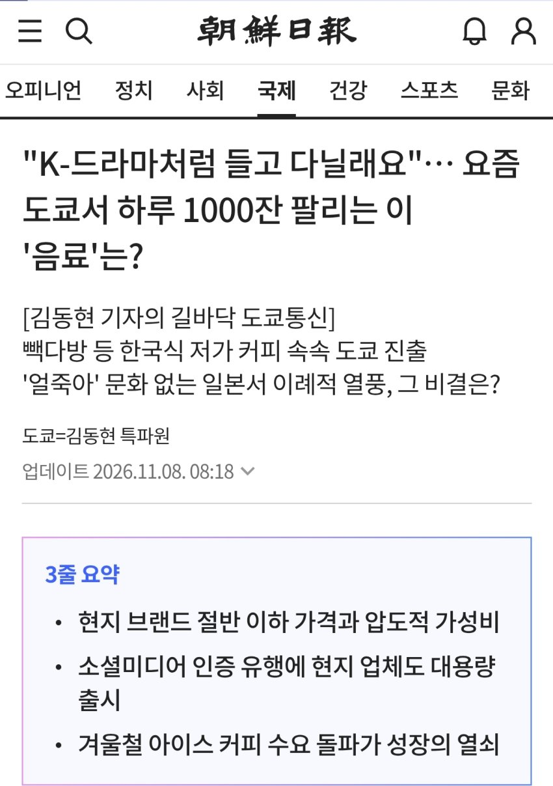
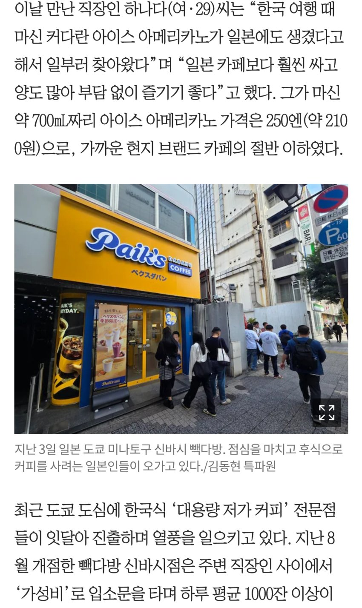
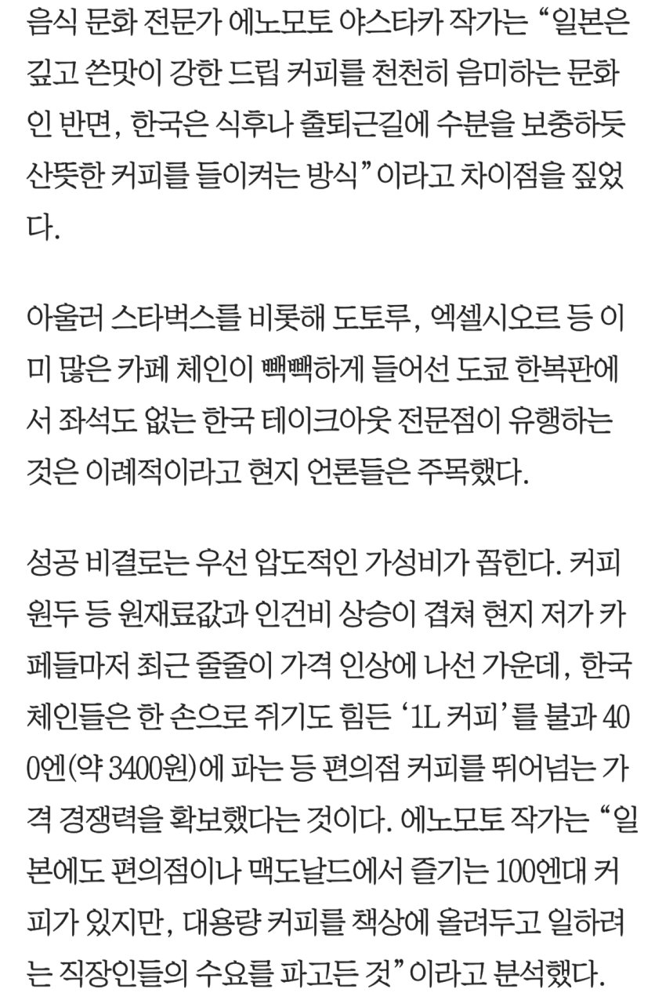
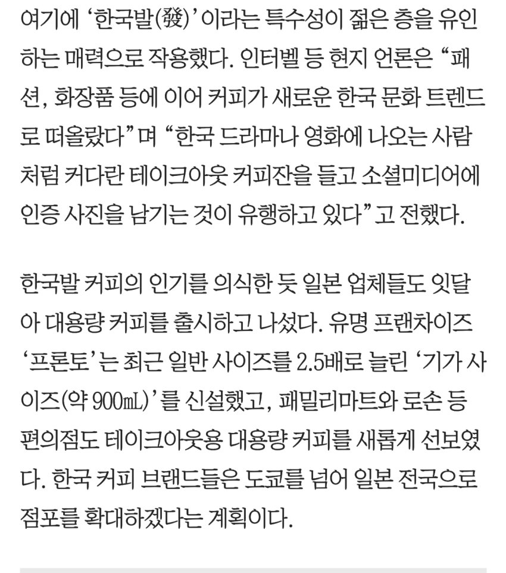
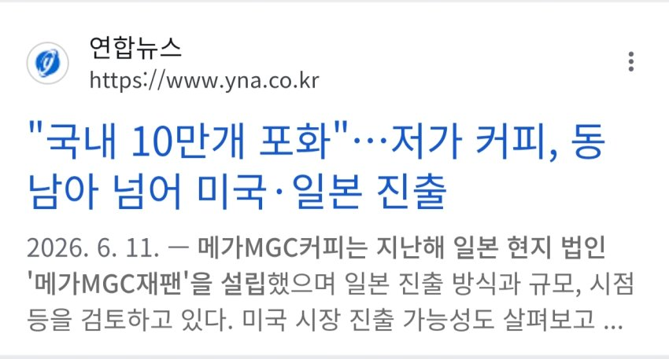

“K-드라마처럼 들고 다닐래요”… 요즘 도쿄서 하루 1000잔 팔리는 이 ‘음료’는?

빽다방, 매머드커피 등 저가대용랑커피브랜드 일본 매장들이 장사가 잘된다함..
의외로 일본이 대용량 아이스아메리카노 마시는 문화가 거의 없었다던데
토종 일본커피브랜드들도 부랴부랴 대용량 커피 내놓고 있음
꿀빤단 소문에 가장 큰 저가커피브랜드인 메가커피도 일본진출 예고 ㅋㅋㅋ

다만 한국은 겨울에도 아이스 아메리카노 마시는데 일본도 그럴지는 미지수...
계절에 따라 매출이 크게 변한다는게 꽤나 큰 리스크라함
나여!
댓글
수집 당시 댓글 199개
· ㅇㅇ · 11.10 10:33:06
· ㅇㅇ · 11.10 11:41:06
· ㅇ · 11.10 14:28:09
ㅇㅇ · 11.10 01:13:57
악의꽃 · 11.10 01:19:28
· 샨테 · 11.10 17:23:09
ㅇㅇ · 11.10 01:22:21
ㅇㅇ · 11.10 01:22:57
· ㅇㅇ · 11.10 02:18:33
ㅇㅇ · 11.10 01:31:51
· ㅇㅇ · 11.10 12:01:01
ㅇㅇ · 11.10 01:32:30
· ㅇㅇ · 11.10 01:34:16
ㅇㅇ · 11.10 01:34:32
· 2456778 · 11.10 05:02:20
ㅇㅇ · 11.10 01:45:53
ㅇㅇ · 11.10 01:55:30
· 공정성장 · 11.10 08:39:54
ㅇㅇ · 11.10 02:15:20
· ㅇㅇ · 11.10 08:54:34
· ㅇㅇ · 11.10 08:56:11
· ㅇㅇ · 11.10 10:37:00
· ㅇㅇ · 11.10 11:24:06
ㅇㅇ · 11.10 02:15:50
· ㅇㅇ · 11.10 08:54:59
· ㅇㅇ · 11.10 10:37:35
ㅇㅇ · 11.10 02:25:13
잭니 · 11.10 02:29:05
ㅇㅇ · 11.10 02:37:31
ㅇㅇ · 11.10 02:38:26
ㅇㅇ · 11.10 02:52:22
나여
ㅇㅇ · 11.10 03:18:38
아아
존나
맛없는데
ㅇㅇ · 11.10 03:18:45
oㅇoㅇ · 11.10 03:26:13
1 · 11.10 03:48:11
ㅇㅇ · 11.10 04:06:04
ㅇㅇ · 11.10 04:15:31
ㅇㅇ · 11.10 04:32:24
· ㅇㅇ · 11.10 04:33:27
· ㅇㅇ · 11.10 10:08:16
삼갤러 · 11.10 04:36:37
ㅇㅇ · 11.10 04:42:32
2456778 · 11.10 05:00:56
ㅇㅇ · 11.10 05:02:49
· ㅇㅇ · 11.10 05:17:34
딱등 · 11.10 05:50:36
ㅇㅇ · 11.10 06:05:22
나옹이 · 11.10 06:21:27
· 나옹이 · 11.10 06:22:18
ㅇㅇ · 11.10 06:21:29
ㅇㅇ · 11.10 06:28:13
ㅇㅇ · 11.10 06:31:05
쿠붕이 · 11.10 06:33:41
카야조아 · 11.10 06:40:29
pyuru · 11.10 06:43:19
pyuru · 11.10 06:43:50
ㅇㅇ · 11.10 06:56:48
· ㅇㅇ · 11.10 09:09:46
· ㅇㅇ · 11.10 09:47:33
ㅇㅇ · 11.10 07:05:52
ㅇㅇ · 11.10 07:09:31
ㅇㅇ · 11.10 07:15:10
ㅇㅇ · 11.10 07:34:17
ㅇㅇ · 11.10 07:36:03
ㅇㅇ · 11.10 07:45:34
· ㅇㅇ · 11.10 08:49:13
ㅇㅇ · 11.10 08:12:57
ㅇㅇ · 11.10 08:15:31
ㅇㅇ · 11.10 08:26:38
ㅇㅇ · 11.10 08:39:12
ㅇㅇ · 11.10 08:42:37
일본박사샨테- · 11.10 08:46:22
ㅇㅇㅇ · 11.10 08:47:55
나여!
ㅇㅇ · 11.10 08:49:03
네소베리안 · 11.10 08:51:21
ㅇㅇ · 11.10 08:59:14
ㅇㅇ · 11.10 09:10:34
슈퍼지구민주투사 · 11.10 09:17:30
종~원
ㅇㅇ · 11.10 09:21:31
타바코쉬카 · 11.10 09:48:35
· ㅇㅇ · 11.10 09:51:44
· ㅇㅇ · 11.10 09:55:18
· 타바코쉬카 · 11.10 09:57:12
· ㅇㅇ · 11.10 11:57:54
· ㅇㅇ · 11.10 11:58:41
ㅇㅇ · 11.10 09:56:14
ㅇㅇ · 11.10 10:00:50
ㅇㅇ · 11.10 10:19:00
ㅇㅇ · 11.10 10:31:14
· ㅇㅇ · 11.10 10:54:03
ㅇㅇ · 11.10 10:38:29
ㅇㅇ · 11.10 11:46:51
ㅂㅂ · 11.10 11:54:09
ㅇㅇ · 11.10 12:09:25
ㅇㅇ · 11.10 13:26:18
ㅇㅇ · 11.10 13:42:13
ㅇㅇ · 11.10 13:42:16
ㅇㅇ · 11.10 13:42:21
ㅇㅇ · 11.10 14:17:28
ㅇㅇ · 11.10 14:55:19
ㅇㅇ · 11.08 23:34:35
ㅇㅇ · 11.08 23:34:37
· 방귀진동연구원수석박사 · 11.08 23:45:49
· ㅇㅇ · 11.09 00:09:38
· ㅇㅇ · 11.09 00:14:31
· ㅇㅇ · 11.09 00:34:01
· 10콜맨 · 11.09 01:50:19
· ㅇㅇ · 11.09 06:12:31
· ㅇㅇ · 11.10 00:54:33
· ㅇㅇ · 11.10 01:02:02
· ㅇㅇ · 11.10 01:15:31
· ㅇㅇ · 11.10 01:17:56
· 123 · 11.10 01:26:29
· ㅇㅇ · 11.10 01:29:53
· ㅇㅇ · 11.10 01:37:43
· ㅇㅇ · 11.10 01:41:56
· ㅇㅇ · 11.10 01:47:26
· ㅇㅇ · 11.10 01:56:24
· ㅇㅇ · 11.10 01:57:06
· ㅇㅇ · 11.10 08:55:43
ㅇㅇ · 11.08 23:35:52
ㅇㅇ · 11.08 23:38:00
· ㅇㅇ · 11.10 01:16:50
대독승전메달 · 11.08 23:38:05
· Randosell · 11.09 03:13:57
· ㅇㅇ · 11.09 11:10:16
· ㅇㅇ · 11.10 00:50:34
· ㅇㅇ · 11.10 00:52:29
· ㅇㅇ · 11.10 01:04:08
방귀진동연구원수석박사 · 11.08 23:46:59
ㅇㅇ · 11.09 00:03:57
ㅇㅇ · 11.09 00:10:37
· ㅇㅇ · 11.09 10:00:34
· 링리 · 11.09 12:41:53
· ㅇㅇ · 11.10 00:50:20
· 링리 · 11.10 00:54:47
· ㅇㅇ · 11.10 00:57:16
· ㅇㅇ · 11.10 01:01:06
· ㅇㅇ · 11.10 01:17:39
· ㅇㅇ · 11.10 01:18:22
· 해나이 · 11.10 02:01:02
· 키노시타카즈야 · 11.10 03:52:37
· ㅇㅇ · 11.10 05:01:00
· ㅇㅇ · 11.10 06:02:57
· 발견시_독서집필_지시 · 11.10 07:13:16
· 해나이 · 11.10 14:28:29
ㅇㅇ · 11.09 00:21:03
ㅇㅇ · 11.09 00:32:04
ㅇㅇ · 11.09 00:39:15
ㅇㅇ · 11.09 01:27:18
ㅇㅇ · 11.09 02:44:24
ㅇㅇ · 11.09 07:55:50
땨뗘(봇) · 11.10 00:45:07
BLoo · 11.10 00:46:41
· 2456778 · 11.10 05:03:52
ㅇㅇ · 11.10 00:47:19
ㅇㅇ · 11.10 00:47:39
· ㅇㅇ · 11.10 02:01:14
· ㅇㅇ · 11.10 02:12:40
ㅇㅇ · 11.10 00:48:02
· ㅋㅋ · 11.10 00:50:33
· 2456778 · 11.10 05:03:30
ㅇㅇ · 11.10 00:49:07
· ㅇㅇ · 11.10 00:50:29
ㅇㅇ · 11.10 00:50:28
ㅇㅇ · 11.10 00:50:29
· ㅋㅋ · 11.10 00:51:16
ㅋㅋ · 11.10 00:51:47
ㅇㅇ · 11.10 00:52:02
ㅇㅇ · 11.10 00:52:09
ㅇㅇ · 11.10 00:53:10
· ㅇㅇ · 11.10 00:54:49
ㅇㅇ · 11.10 00:54:28
ㅇㅇ · 11.10 00:54:49
· ㅇㅇ · 11.10 00:57:24
ㅇㅇ · 11.10 00:54:51
· ㅇㅇ · 11.10 00:57:37
· ㅇㅇ · 11.10 01:33:54
ㅇㅇ · 11.10 00:55:56
つついあやめのおっと · 11.10 00:56:43
· 2456778 · 11.10 05:03:19
ㅇㅇ · 11.10 00:57:07
· ㅇㅇ · 11.10 01:08:49
· 00 · 11.10 08:33:08
ㅋㅋ · 11.10 00:57:46
· ㅇㅇ · 11.10 01:00:57
· ㅋㅋ · 11.10 01:10:32
· pyuru · 11.10 06:44:49
かなたん · 11.10 00:58:06
· 2456778 · 11.10 05:02:37
ㅇㅇ · 11.10 00:58:55
Doro · 11.10 01:04:16
· 2456778 · 11.10 05:02:30
마테오리치 · 11.10 01:07:56
ㅇ · 11.10 01:08:07
· ㅇㅇ · 11.10 01:13:38
· ㅇㅇ · 11.10 06:04:24
· ㅇㅇ · 11.10 08:52:35
· ㅇ · 11.10 09:23:55